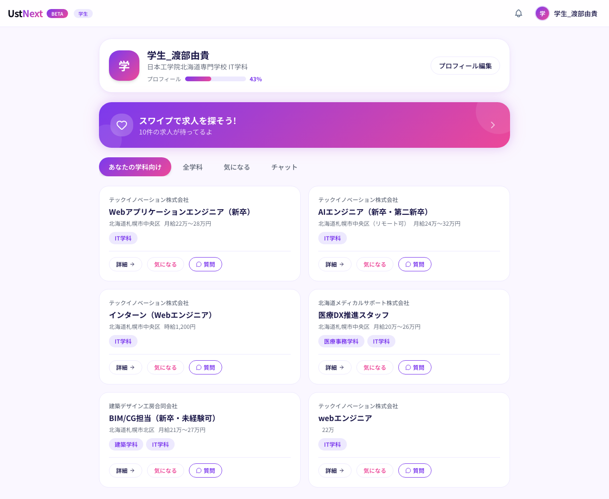
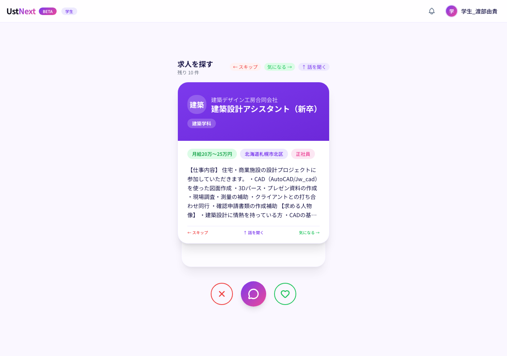
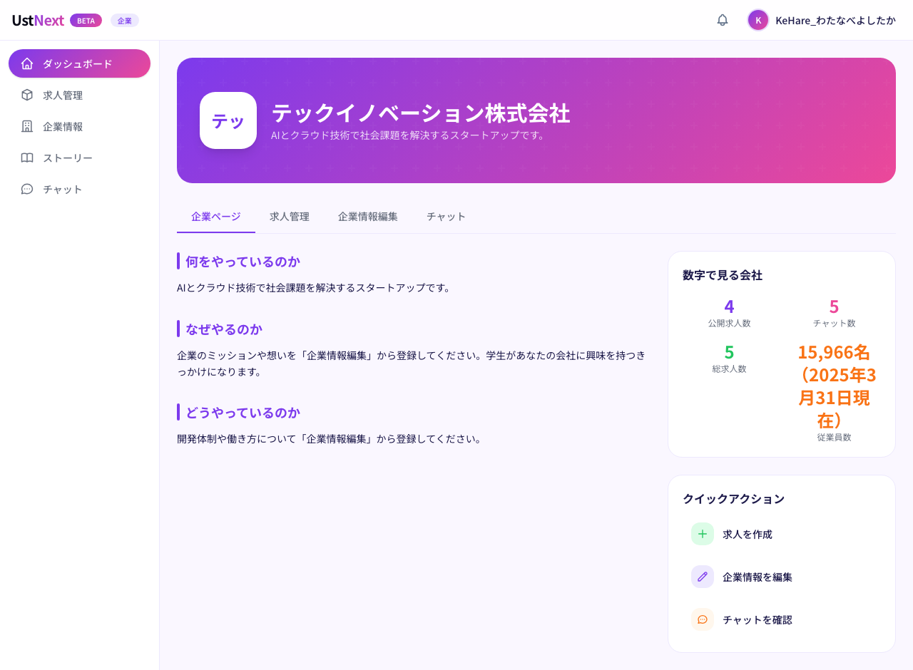
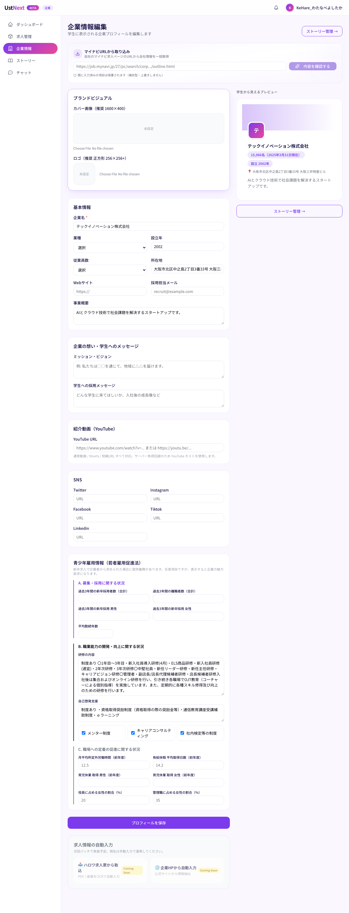
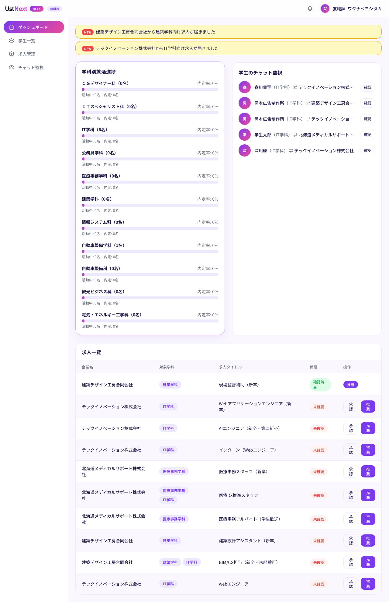
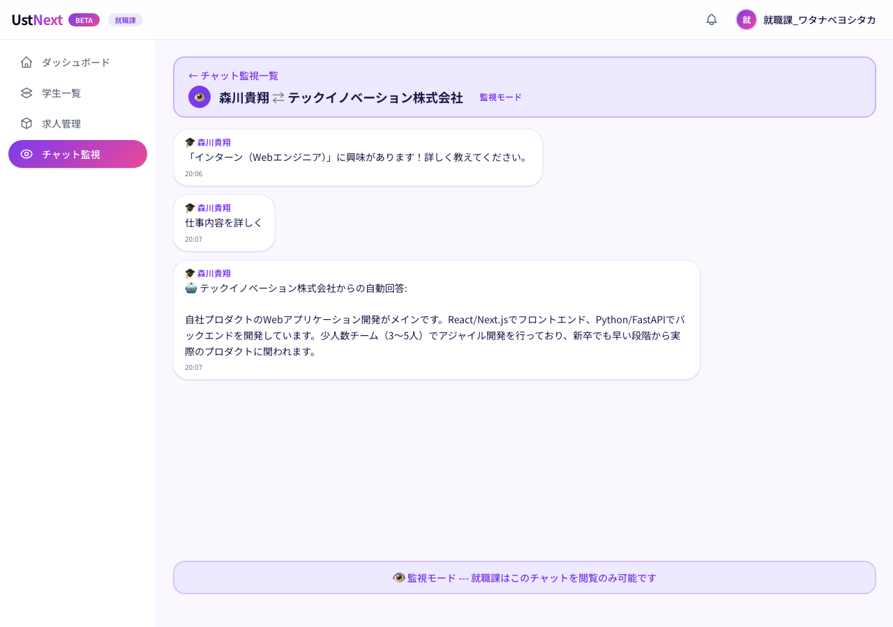

大学生向けに最適化された就活サイトでは、専門学校生の選び方は届かない。
UstNext は、専門性 × 働き方 × 自分軸で動く専門学校生のために、ゼロから設計されました。
既存の就活サイトは、4年制大学生を中心に設計されています。
専門学校生・企業・専門学校という三者の関係性は、誰にも引き受けられないまま、
現場の先生と一人人事の善意で回ってきました。
専門学校生は、専門性・働き方・自分軸の3軸で職を選ぶ。検索型のサイトでは、学校で学んだ強みを言語化できず、自分の本来の選択肢に出会えない。
専門学校とつながる手段が全くないわけではない。それでも、選択肢が限られていて、求人票という書類だけでは社風や育てる文化までは伝えきれない。学校との関係構築には時間と人手がかかる。
就職課の現場は、推薦状の作成、面談記録、企業対応、保護者対応で手一杯。学生がどの企業とどう話しているか、トラブルが起きる前に気づく仕組みが無い。
「指が止まる」— 日本工学院北海道専門学校・情報システム科 医療事務コースの2年生が、UstNextに出会って動き出すまでの物語。
スワイプ／矢印キー／左右ボタンでページが進みます
機能の話ではなく、現場で起きる変化をそのまま並べます。読み終わった瞬間に「これは必要だ」と感じていただけるよう、忖度なく書きました。
企業は想いを発信できる。学生は自分軸で選べる。学校はその動きを見守れる。
3つが連動して初めて、専門学校生が「自分に合う」と納得できるマッチングが成立します。
学生・企業・学校が、それぞれの立場で役割を果たす。一方的な検索でも、一方的な売り込みでもない、新しい就活の形。






大学生向けの就活サイト、検索型の求人サイト、学校管理型のシステム。それぞれが部分的にしかカバーしてこなかった「専門学校生の就活」を、UstNextは正面から引き受けます。
| マイナビ／ リクナビ |
Indeed | ハローワーク | J-Navi⁺ (Harmony Plus) |
UstNext | |
|---|---|---|---|---|---|
| 専門学校生に特化 | — | — | — | ○ | ◎ |
| 企業の想いをリッチに発信 | ○ | — | — | — | ◎ |
| 学校就職課との連動 | — | — | — | ◎ | ◎ |
| スワイプ・モバイル中心UI | — | — | — | — | ◎ |
| 匿名スカウトモード | — | — | — | — | ◎ |
| 学生×企業のチャット見守り | — | — | — | — | ◎ |
| 若者雇用促進法対応 | ○ | — | ○ | — | ◎ |
| 中小企業との親和性 | — | ○ | ○ | — | ◎ |
※ 学校管理型システムの代表例として「J-Navi⁺（Harmony Plus）」が専門学校就職課向けに提供されています。詳細：https://www.harmony-plus.co.jp/service/5122/ ／ UstNext は、既存の学校管理システムを置き換えるのではなく、学生・企業の発信のリッチさと3者連動で併存できるよう設計されています。
大学生のように選択肢の中から「効率良く選ぶ」のではなく、専門学校生は「自分の専門性を活かせる場所で、長く働ける確信」を得たい。納得のいく就職には、3者の連動が不可欠です。
学科別求人フィルタ、スキルシート、GitHub・動画PR、企業ページの「どうやっているのか」で、技術と現場の解像度を上げる。
勤務時間・育成体制・社風・リモート可否など、求人票の数値だけでは見えない働き方の解像度を、企業ページとチャットで深く知れる仕組み。
企業の想い、学校の見守り、学生の自分軸が同じテーブルに乗ることで、「親や先生に納得してもらえる」言葉ができる。
就職課の現状業務、学生の規模、企業との接点をヒアリング。学校独自の運用に合わせて、見守り設計とアカウント発行を行います。
提携企業の企業ページを共同で作成。既存求人ページのURL取得、ハロワ求人票OCR（順次実装）で、入力工数を最小化します。
学校からのアナウンスで学生がアカウント登録。企業ページとスワイプから就活が始まります。就職課は学生の動きを見守りながら、必要に応じて介入します。
可能です。UstNextは「学生・企業・学校が同じテーブルで動く」プラットフォームであり、既存の校内管理システムを置き換えるものではありません。学生のリッチな発信と、企業の想いの可視化、就職課の見守りを担う形で併用できます。
就職課は閲覧のみ可能で、書き込み権限はありません。画面上に「見守りモード」が明示され、学生・保護者にも事前に同意いただく運用を推奨しています。トラブルの早期発見と学生保護を目的とした、教育機関としての責任を果たすための設計です。
学校向けは規模別の年間契約をご用意しています。ベータ版期間中の特別プランもございますので、個別にご相談ください。
UstNextは専門学校生に特化したプラットフォームです。専門性 × 働き方 × 自分軸という専門学校生独自の選び方を、最初から設計の中心に置いています。高校生・大学生向けの就活サービスとは別物として位置付けています。
ハロワ求人票OCR、HP自動入力、推薦状PDF出力など、現場の声を反映した機能を順次リリース予定です。導入企業・学校には優先的にロードマップを共有し、ご要望を反映します。
2026年5月末ベータ正式公開。先行ヒアリング・お試し導入のご相談を承っています。